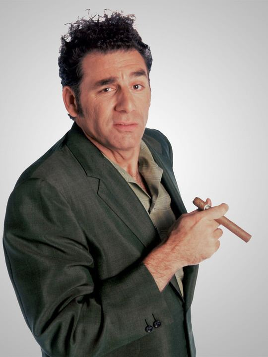

About Cosmo Kramer
"Lithe, graceful... Spectacular!" - Calvin Klein
"Loathsome, offensive brute, yet I can't look away..." - Unknown Art Critic
Although he grew up in a strict household as a child, Cosmo Kramer followed in the footsteps of other numerous geniuses by thumbing his nose at traditional education. He dropped out of high school, but did pass his General Education Development (GED) tests earning his high school equivalency degree. Whilst largely estranged from his family, Kramer was endowed with a somewhat sizable inheritance in his early life. This financial windfall allowed him to follow his passions and metamorphose into a cutting-edge entrepreneur.
Navigation
Social Media
2020 All Rights Reserved. Design by Free html Templates